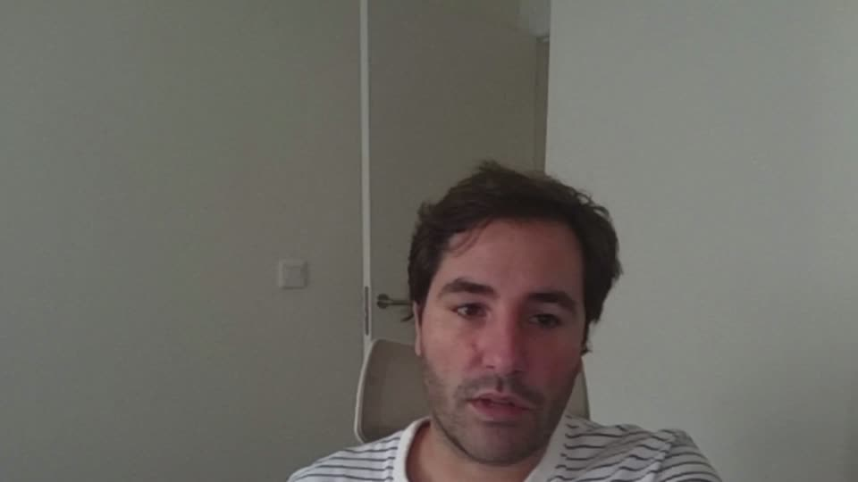
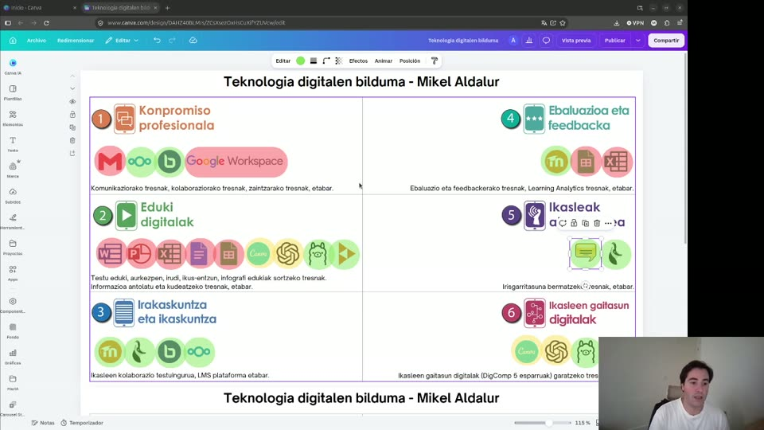
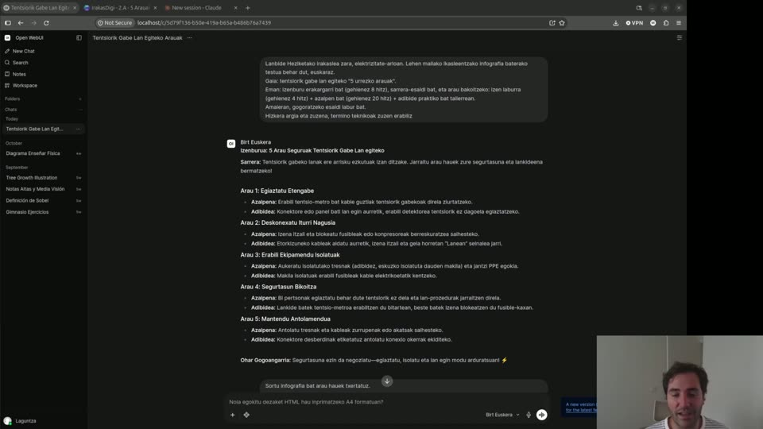
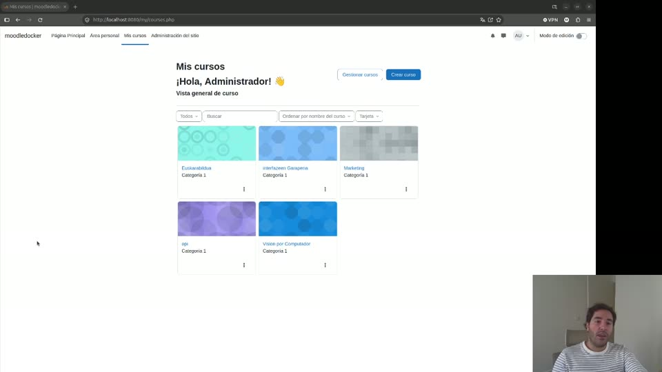
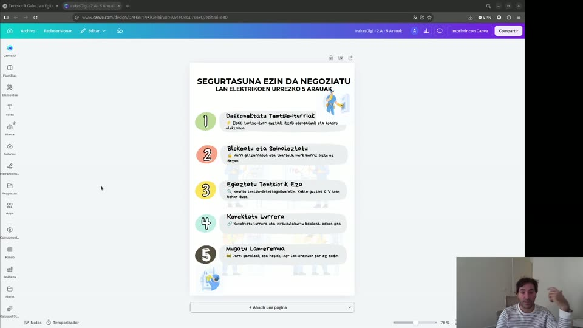
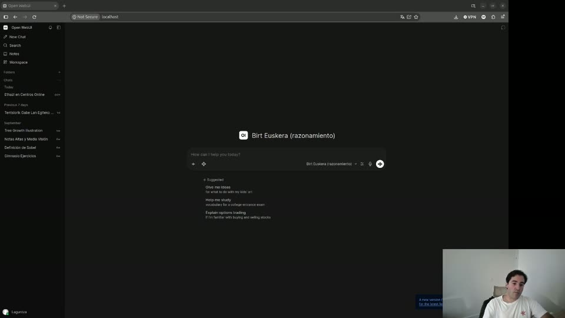
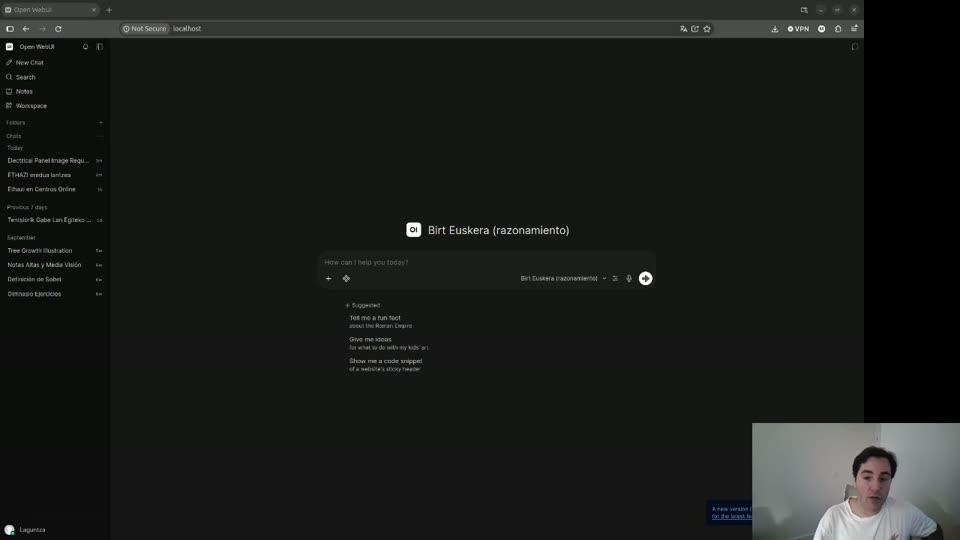
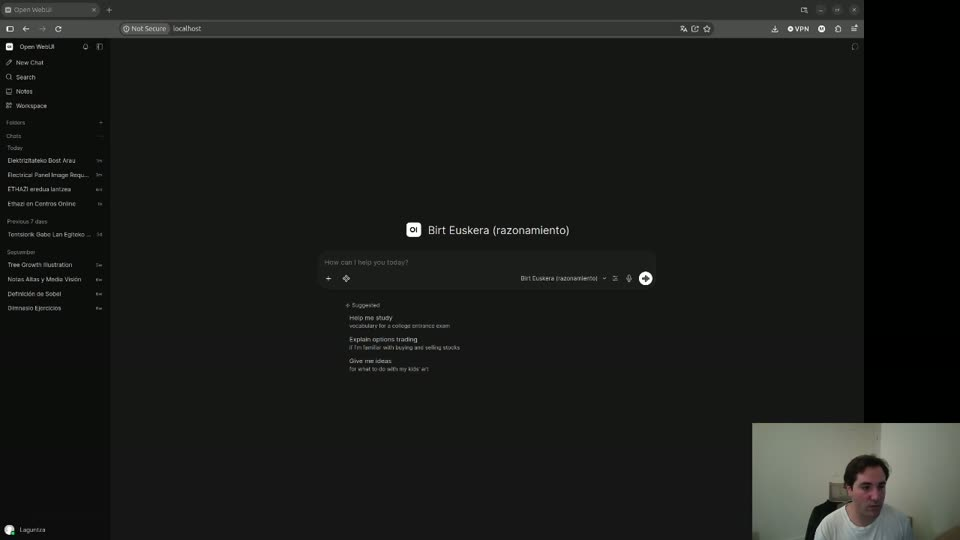

IrakaDigi B2 · Gaitasun digitalaren akreditazioa
Bideoak eta jarduerak
Bideoak

1:10 AurkezpenaZure burua aurkeztu
2:02 1.ATeknologia digitalen bilduma
7:37 2.AAdimen artifizialarekin eduki digitalen sorrera
6:54 4.AAdimen artifizialarekin ebaluazio-tresna baten sorrera
9:34 5.AEduki digitalen pertsonalizazioa
12:06 6.AInformazio-bilaketa
10:39 6.BProzesu sortzailea
6:00 6.CEduki digitalen sorreraJarduera interaktiboak
- 3.A Kontrol-panelaren diagnostikoa: 4 aberia, 5 urrats
H5P liburu interaktiboa: kontrol-panel bateko aberiak diagnostikatzeko jarduera, nabigatzailean bertan egiteko. - 3.B Transformazio-zentro bateko deskargoa VR-n — gidoia
Ingurune inmersiborako prozesuaren gidoia: zikloa, ikaskuntza-helburuak, diseinua eta sekuentzia. - 3.B Transformazio-zentroa — prototipo inmersiboa
Three.js eta WebXR bidezko prototipoa: 5 urrezko arauak ordenagailuan, mugikorrean edo VR betaurrekoetan.
Fitxategiak
- 1.A Teknologia digitalen bilduma (irudia) (1 MB)
- 3.A Kontrol-panelaren diagnostikoa (.h5p paketea) (1 MB)
- 4.B Ebaluazio-tresna: Moodle galdetegiaren babeskopia (.mbz) (8 KB)